UNIT 35 · VOCABULARY
P 開頭（二）
P-II
41 個單字聽・唸・用
本單元單字一覽
WORD UP「P-II」的 41 個字（pepper 到 pleased）。紅色＝要複習，藍色標籤＝WORD UP 標熟記、還要在這裡考對。
pepperperfectperhapsperiodpersonpersonalpetPhilippinesphonephotophotographphotographerphysicspickpicnicpicturepiepiecepigpigeonpilepillowpinpineapplepinkpipepizzaplaceplainplanplaneplanetplantplateplatformplayplayerplaygroundpleasantpleasepleased
每個字都有 🔊，先聽發音、跟著唸，再看例句。
單字 1–4
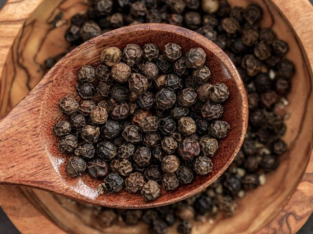
pepper
胡椒；辣椒n.
Add some salt and pepper.
加點鹽和胡椒。
加點鹽和胡椒。
💯
perfect
完美的adj.
Nobody is perfect.
沒有人是完美的。
沒有人是完美的。
🤔
perhaps
也許adv.
Perhaps he is busy.
也許他很忙。
也許他很忙。
⏳
period
期間；一段時間；句點n.
We had a long period of rain.
我們經歷了很長一段雨季。
我們經歷了很長一段雨季。
單字 5–8
person
人n.
She is a kind person.
她是個善良的人。
她是個善良的人。
🔐
personal
個人的；私人的adj.
This is my personal diary.
這是我的私人日記。
這是我的私人日記。
pet
寵物n.
Do you have any pets?
你有養寵物嗎？
你有養寵物嗎？

Philippines
菲律賓n.
Manila is in the Philippines.
馬尼拉在菲律賓。
馬尼拉在菲律賓。
單字 9–12
phone
電話；打電話n./v.
Can I use your phone?
我可以用你的電話嗎？
我可以用你的電話嗎？

photo
照片n.
Let's take a photo together.
我們一起拍張照吧。
我們一起拍張照吧。
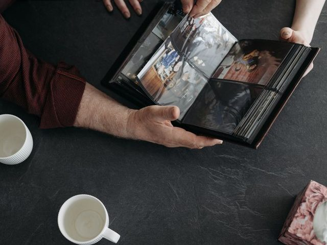
photograph
照片n.
This photograph was taken in 1990.
這張照片是 1990 年拍的。
這張照片是 1990 年拍的。

photographer
攝影師n.
The photographer took pictures of the wedding.
攝影師拍了婚禮的照片。
攝影師拍了婚禮的照片。
單字 13–16
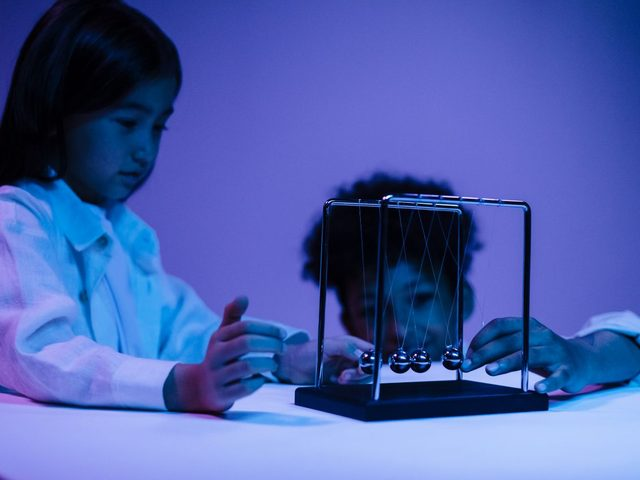
physics
物理n.
Physics is hard but interesting.
物理很難但很有趣。
物理很難但很有趣。

pick
挑選；摘v.
Mom will pick me up after school.
媽媽放學會來接我。
媽媽放學會來接我。
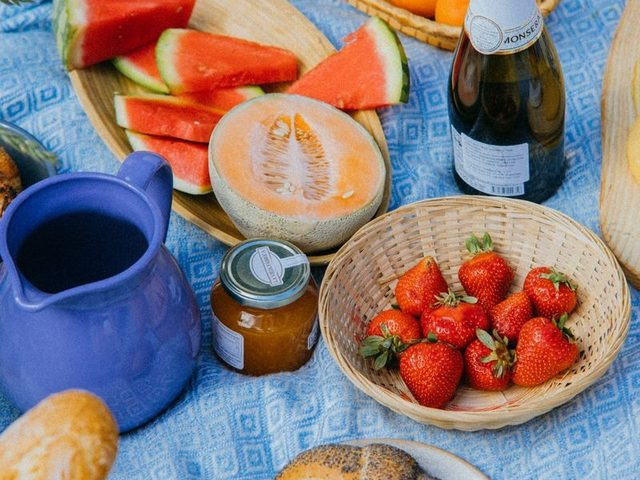
picnic
野餐n.
Let's have a picnic in the park.
我們去公園野餐吧。
我們去公園野餐吧。

picture
圖片；照片n.
Draw a picture of your family.
畫一張你家人的圖。
畫一張你家人的圖。
單字 17–20

pie
派n.
Grandma baked an apple pie.
奶奶烤了一個蘋果派。
奶奶烤了一個蘋果派。

piece
一片；一塊n.
Can I have a piece of cake?
我可以吃一塊蛋糕嗎？
我可以吃一塊蛋糕嗎？
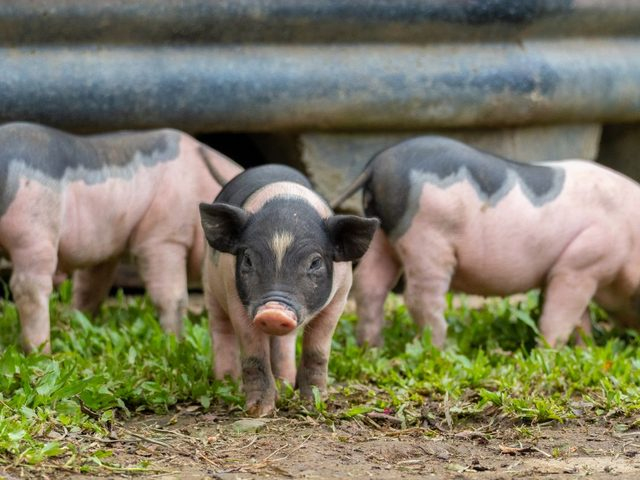
pig
豬n.
The pig is rolling in the mud.
豬在泥巴裡打滾。
豬在泥巴裡打滾。

pigeon
鴿子n.
Pigeons are walking in the square.
鴿子在廣場上走來走去。
鴿子在廣場上走來走去。
單字 21–24

pile
一堆n.
There is a pile of books on the desk.
桌上有一堆書。
桌上有一堆書。
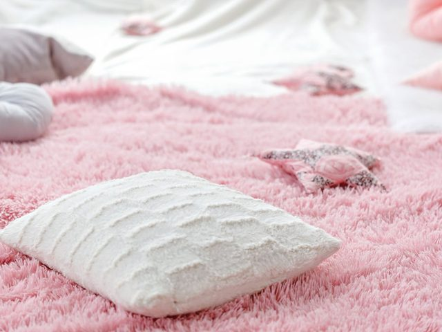
pillow
枕頭n.
I need a soft pillow.
我需要一個軟枕頭。
我需要一個軟枕頭。

pin
別針；大頭針n.
She wore a pin on her coat.
她外套上別了一個胸針。
她外套上別了一個胸針。
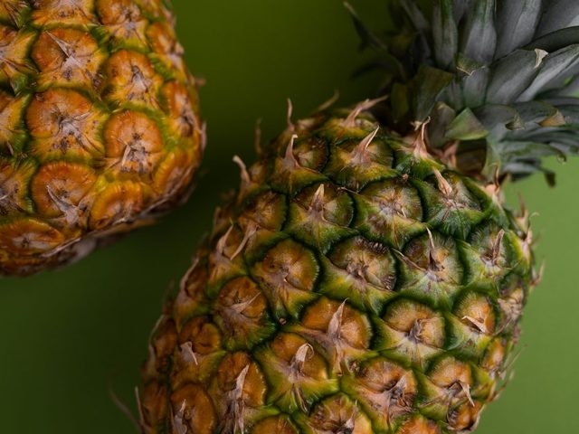
pineapple
鳳梨n.
Pineapple cakes are famous in Taiwan.
鳳梨酥在台灣很有名。
鳳梨酥在台灣很有名。
單字 25–28

pink
粉紅色的adj./n.
She has a pink bag.
她有一個粉紅色包包。
她有一個粉紅色包包。
pipe
管子；煙斗n.
Water runs through the pipe.
水流過管子。
水流過管子。

pizza
披薩n.
Let's order a pizza.
我們點個披薩吧。
我們點個披薩吧。
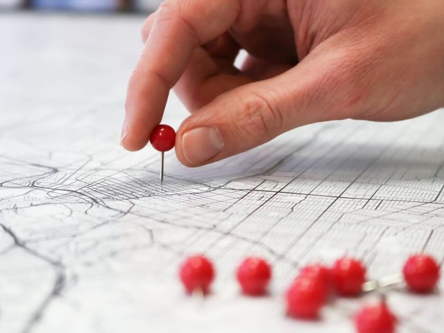
place
地方；放置n./v.
The concert will take place in the park.
音樂會將在公園舉行。
音樂會將在公園舉行。
單字 29–32

plain
簡單的；樸素的；平原adj./n.
She wore a plain white T-shirt.
她穿一件素色白 T 恤。
她穿一件素色白 T 恤。
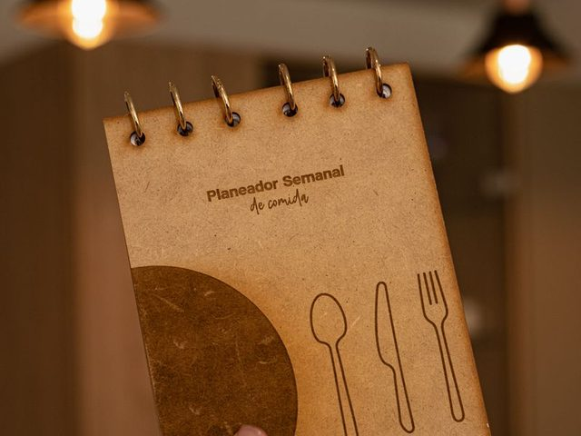
plan
計畫n./v.
What are your plans for the weekend?
你週末有什麼計畫？
你週末有什麼計畫？
plane
飛機n.
We went to Japan by plane.
我們搭飛機去日本。
我們搭飛機去日本。

planet
行星n.
Earth is our planet.
地球是我們的星球。
地球是我們的星球。
單字 33–36

plant
植物；種植n./v.
Water the plants every day.
每天幫植物澆水。
每天幫植物澆水。
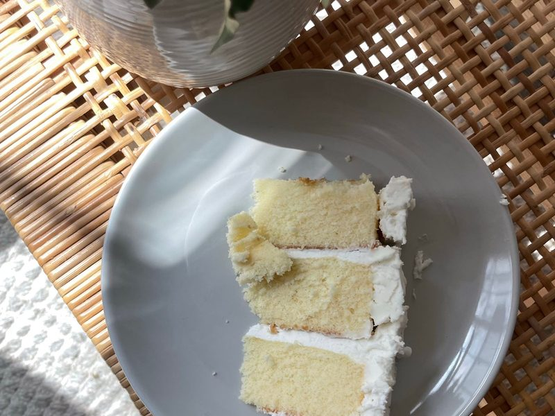
plate
盤子n.
Put the food on the plate.
把食物放在盤子上。
把食物放在盤子上。
platform
月台；平台n.
The train is at Platform 2.
火車在第二月台。
火車在第二月台。
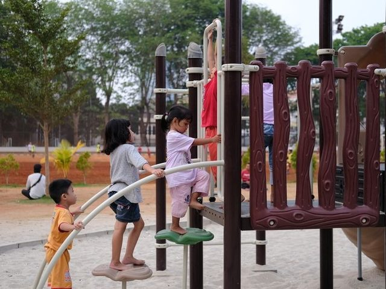
play
玩；演奏；戲劇v./n.
Let's play basketball.
我們去打籃球吧。
我們去打籃球吧。
單字 37–40

player
選手；播放器n.
He is the best player on the team.
他是隊上最好的球員。
他是隊上最好的球員。

playground
遊樂場；操場n.
The kids are on the playground.
孩子們在操場上。
孩子們在操場上。
😊
pleasant
令人愉快的adj.
We had a pleasant trip.
我們的旅行很愉快。
我們的旅行很愉快。
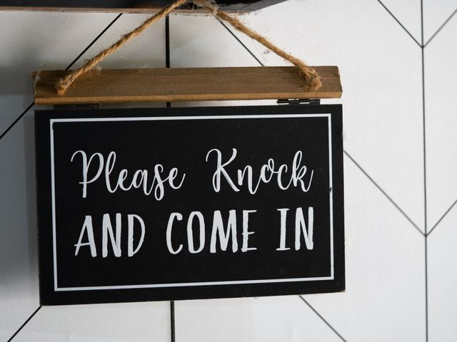
please
請；使高興adv./v.
Please be quiet.
請安靜。
請安靜。
單字 41–41
😌
pleased
（人）高興的；滿意的adj.
Mom was pleased with my grades.
媽媽對我的成績很滿意。
媽媽對我的成績很滿意。
重點整理
| 說法 | 中文 | 例子 |
|---|---|---|
| pick up | 撿起；接（人） | pick up the trash ／ pick me up |
| take place | 舉行；發生 | The game takes place on Friday. |
| a piece of / a pile of | 一片 ／ 一堆 | a piece of paper ／ a pile of clothes |
| plan to V | 計畫做… | plan to travel |
| pleasant / pleased | 令人愉快的 ／ 人感到高興的 | a pleasant day ／ I'm pleased. |
| plane / planet / plant | 飛機 ／ 行星 ／ 植物 | by plane ／ the planet ／ a plant |
| have a picnic | 野餐 | have a picnic by the river |
person 的複數是 people；physics 雖然有 s，但當單數用。
快問快答：中文 → 英文
1胡椒；辣椒pepper
2也許perhaps
3人person
4寵物pet
5電話；打電話phone
6照片photograph
7物理physics
8野餐picnic
快問快答：英文 → 中文
1pie派
2pig豬
3pile一堆
4pin別針；大頭針
5pink粉紅色的
6pizza披薩
7plain簡單的；樸素的；平原
8plane飛機
學完了！接下來
複習方法
review
- 回到「📗 單字卡」，按「遮中文」自己考自己
- 再按「遮英文」，看中文說出英文
- 每個例句跟著 🔊 唸一次
準備好了
- 按右上角「📝 前往測驗」
- 測驗錯的題目要訂正到全對
- 訂正完成補送 1 點